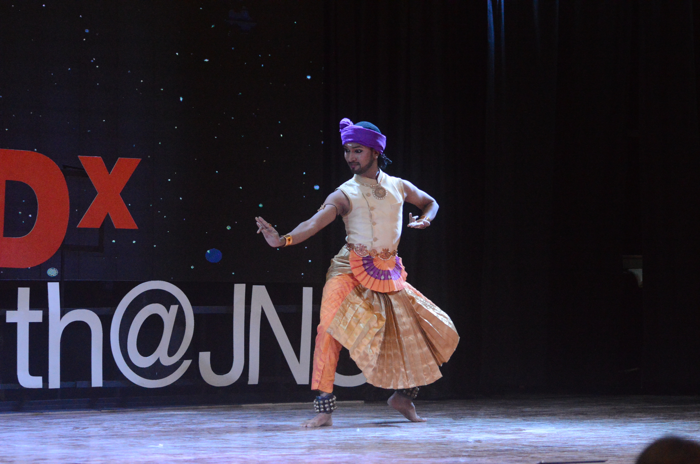

Mr. Akshay Ayre, a renowned Bharata Nrutyam dancer, who was trained under the able guidance of Guru Smt. Tejaswini Lele and currently training in Bharata Nrutyam under the guidance of Guru Dr. Jayashree Rajagopalan considers it his mission to pass on the tradition of Indian Classical Dance to the upcoming generations.
His devotion and dedication to Bharatnatyam, has brought him numerous accolades.
Mr. Ayre won the national senior scholarship awarded by the Ministry Of Culture India for the year 2014-2015. He is also a member of the International Dance Council CID, Paris.
Mr. Ayre is the director at Vitamin Art Pvt. Ltd, where he teaches Bharatnatyam to over a 100 students.
Indian Classical Dance- A Complete Art
Mr. Ayre mesmirized the audience by performing a gracefull bharatnatyam piece.
He started off by talking about ‘Natyaveda’, which is a beautiful creation by Lord Brahma for the well being of human beings. He shared how he was always incilned towards indian art forms , it fascinated him. He spoke about how his design study, impacted his dance performances. “ Design is like dance on paper and dance is drawing on stage.”
Talking about the 10 essential qualities to be a good performer, he highligthed the importance of music. Dance is music made visible, it is a play of emotions and dance is sculptures coming alive. He stated that no indian theatre is just an entertainment. It is disigned for enlightenment and works best as a personality development source.
He ended with a performance describing the completeness of indian classical dances